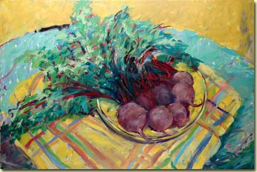
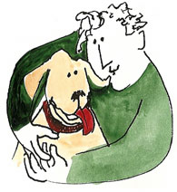

Creating, whether with clay, fibers, glass, or paint makes my life worth living.
The creativity of my parents was my first inspiration. After graduating from the University of Wyoming, I taught art in both Jefferson County and Fort Collins, Colorado in secondary schools until my retirement. It was my intent, as a teacher, to give back some of the joy and satisfaction I found in art. I was also employed as a graphic designer by a printing company. I designed my own greeting cards. I taught adult classes in serigraphy and watercolor. I made baskets that sold in galleries in Cherry Creek, Santa Fe, Chicago and New York. I did furniture painting which had me hauling tables, chairs and armoires in my Toyota van. Glass was my next love, either as slumped or fused in plates or bowls, or copper foil and lead cane glass in window design and three dimensions. I have recently rediscovered oil painting.
My canvases have been painted in the Marquardt approach which entails an acrylic under painting and an oil finish. My subject matter is whatever interests me, landscape to people, dogs, still life, buildings, or abstracts. I hope people find my work interesting.